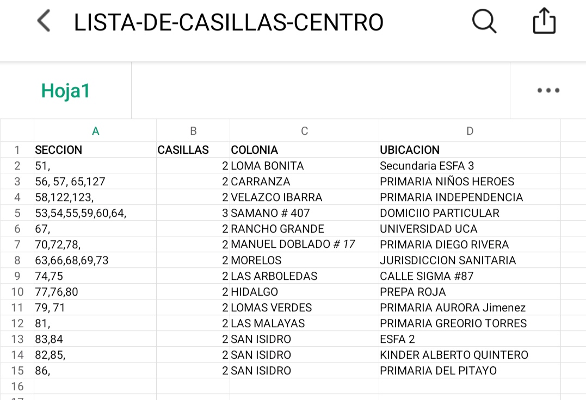
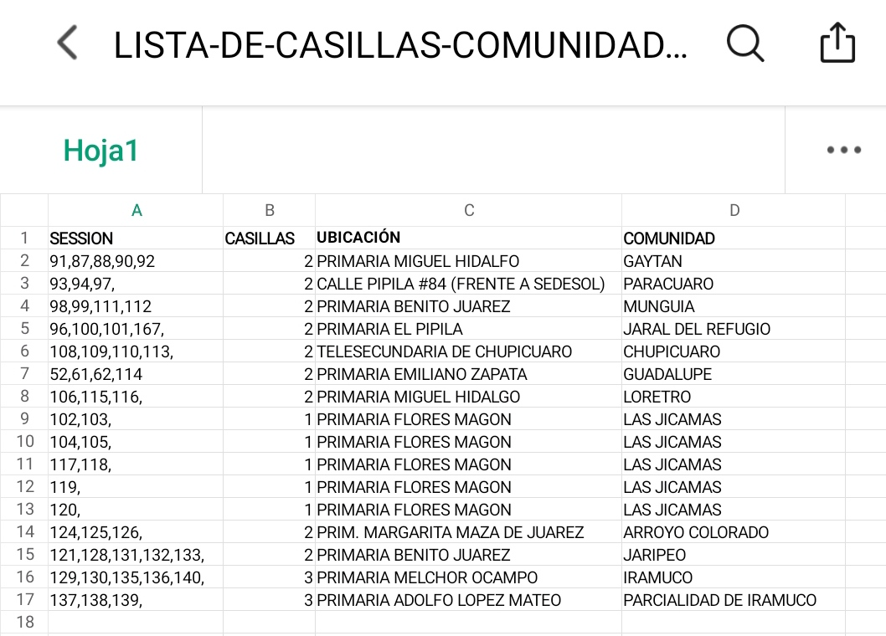

El objetivo de la consulta popular es juntar 37 millones de votos en todo el país.
¿En que consiste?
En que los ciudadanos salgan a votar este 1.- de agosto de 8:00 am a 6:00 pm
¿Cuál es la temática?
Deben de buscar su casilla en esta página del INE
En la boleta, vendrá la pregunta, y dos respuestas SI o NO y deben enmarcar con un tache una de estas dos
¿Cuantas casillas van a haber en Acámbaro?
Habrá 60 casillas en todo el municipio, incluyendo las comunidades. Las personas que desean saber cuál será la casilla donde les toque votar deberán meterse a la página del INE y poner en el buscador de la página la sesión que viene en su credencial de elector, le dan clic en buscar y les aparecerá la casilla donde deben ir a votar
Debemos recordar que esta vez habrá menos casillas que en la elección pasada. De 180 casillas, que se instalaron el 6 de junio de este año, esta vez solo habrá 60 casillas. Algunas casillas no serán las mismas que estuvieron ubicadas en el mismo lugar de la elección pasada, por eso es importante que se metan a la página del INE, para que sepan donde les toca votar.


¿Qué pasaría en caso de que se junte el total de votos?
Se sometería a los expresidentes a Juicio desde Salinas de Gortari hasta Peña Nieto.
Antecedentes
¿Cómo surgió la Consulta popular?
El presidente Obrador, presento la iniciativa el año pasado, a la cámara de diputados, quien la aprobó, después se recabaron las firmas necesarias en todo el país. Posteriormente la Suprema Corte, dio instrucciones al INE para que preparan la consulta.
¿Entonces porque hay poca difusión?
Porque El INE es el principal promotor de la consulta y le ha dado muy poca publicidad a nivel nacional. Establecieron como fecha de difusión oficial del 15 de julio al 30 de julio, solo 15 días, y el mensaje que lanza el INE poco claro no invitan a la ciudadanía de manera directa a votar para enjuiciar a los expresidentes.
¿Porque?
Por qué el INE justifica que no tiene dinero suficiente, para dar mayor difusión, ya que en un principio el INE pedía 1500 millones para llevar a cabo este proceso y el presidente solo les autorizo 500 millones.
En Acámbaro no es la excepción, el INE en el municipio ha dado poca difusión a la consulta popular, son algunos representantes de MORENA quienes están haciendo la publicad y están promoviendo más la difusión de la consulta, y esto sin promover el logotipo de morena, ya que el INE no se lo ha permitido.
Debemos recordar que toda la estructura de INE es priista y panista, y están financiados por los grandes empresarios de México que gastaron millones en una guerra sucia de publicidad contra del presidente Obrador, por esto están de lado de los expresidentes de México, Guerra sucia que por cierto fracaso, porque no lograron quitarle la mayoría a los diputados a MORENA el cual era su principal objetivo.